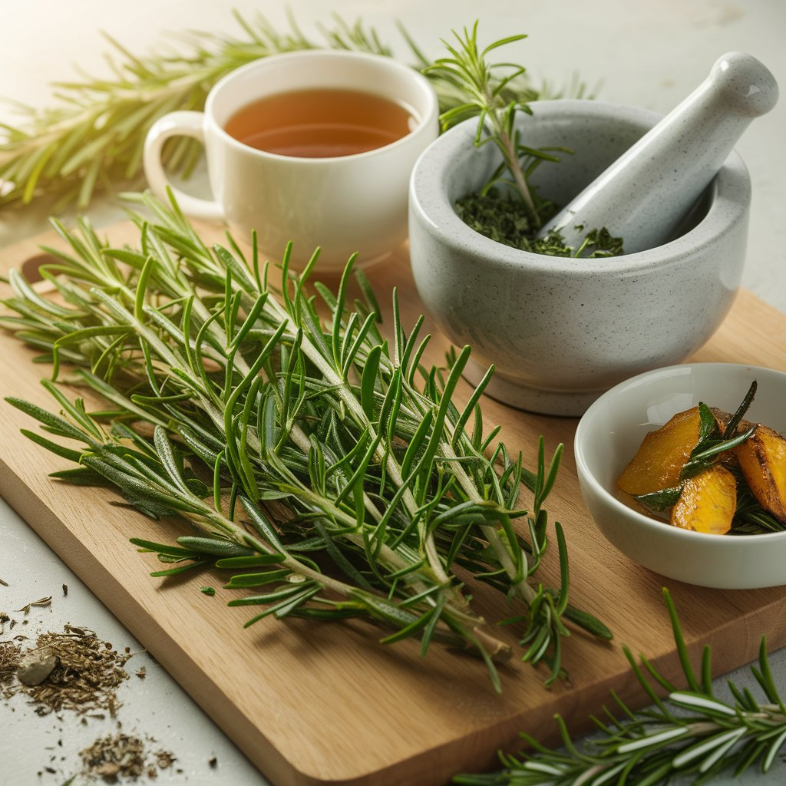

Cultiver ses propres herbes aromatiques est probablement la façon la plus simple et la plus gratifiante de commencer à jardiner. Un rebord de fenêtre ensoleillé, un balcon ou un petit coin de jardin suffisent pour avoir toute l'année des herbes fraîches à portée de main. Fini les sachets fanés du supermarché : avec quelques gestes simples, vous aurez du basilic parfumé, du persil croquant, de la menthe vivifiante et bien d'autres saveurs pour sublimer votre cuisine. Ce guide vous présente les 10 herbes aromatiques incontournables et tout ce qu'il faut savoir pour les réussir.
Pourquoi cultiver ses herbes aromatiques ?
Avant de plonger dans le vif du sujet, rappelons les nombreux avantages de cultiver ses propres aromatiques :
- Fraîcheur incomparable : une herbe cueillie à la seconde a un parfum et une saveur sans commune mesure avec celles du commerce.
- Économies : un pot de basilic à 2 euros dure quelques jours, un plant cultivé dure toute une saison et produit bien davantage.
- Zéro pesticide : vous contrôlez totalement ce que vous consommez.
- Toujours disponibles : plus besoin de courir au magasin quand il manque du persil pour votre taboulé.
- Bienfaits pour la biodiversité : les aromatiques attirent les pollinisateurs et repoussent de nombreux ravageurs.
- Bien-être : jardiner, même à petite échelle, réduit le stress et procure un réel sentiment de satisfaction.

Les 10 herbes aromatiques essentielles
1. Le basilic (Ocimum basilicum)
Le roi des aromatiques méditerranéennes. Son parfum envoûtant est indissociable de la cuisine italienne, des salades d'été et du fameux pesto.
- Type : annuelle (à ressemer chaque année)
- Exposition : plein soleil (minimum 6 heures)
- Sol : riche, bien drainé, toujours légèrement humide
- Semis : en intérieur dès mars, en extérieur après les gelées (mai)
- Arrosage : régulier, le basilic déteste la sécheresse
- Récolte : cueillez les feuilles par le haut, en pinçant au-dessus d'un noeud de feuilles. Cela favorise la ramification et retarde la floraison. Dès que les fleurs apparaissent, pincez-les pour prolonger la production de feuilles.
Le saviez-vous ?
Il existe de nombreuses variétés de basilic au-delà du Grand Vert classique : le basilic pourpre (décoratif et savoureux), le basilic thaï (notes anisées), le basilic citron (parfait pour le poisson), le basilic cannelle et même le basilic grec (en petite boule compacte, idéal en pot).
2. Le persil (Petroselinum crispum)
L'herbe aromatique la plus utilisée en France, indispensable dans d'innombrables recettes. On distingue deux types : le persil plat (plus parfumé, préféré en cuisine) et le persil frisé (plus décoratif, plus doux).
- Type : bisannuelle (produit des feuilles la première année, monte en graines la deuxième)
- Exposition : soleil à mi-ombre
- Sol : riche, frais, bien drainé
- Semis : de mars à août en pleine terre. La germination est lente (2 à 4 semaines). Astuce : faites tremper les graines 24 heures dans de l'eau tiède avant de semer pour accélérer la levée.
- Arrosage : régulier, surtout en été
- Récolte : coupez les tiges extérieures à la base, en laissant le coeur du plant se renouveler. Le persil repousse continuellement tant que vous récoltez de cette façon.
3. La ciboulette (Allium schoenoprasum)
Avec son goût délicat d'oignon, la ciboulette est parfaite dans les omelettes, les salades, le fromage frais et les sauces. Ses jolies fleurs mauves sont comestibles et décoratives.
- Type : vivace (revient chaque année)
- Exposition : soleil à mi-ombre
- Sol : ordinaire, frais
- Plantation : semis au printemps ou division de touffe en automne. La division est la méthode la plus rapide.
- Arrosage : modéré, elle tolère bien la sécheresse passagère
- Récolte : coupez les tiges à 2-3 cm du sol avec des ciseaux. Elles repoussent rapidement. Coupez les fleurs fanées pour stimuler la production de feuilles.
4. La menthe (Mentha)
Rafraîchissante et vigoureuse, la menthe parfume le thé, les cocktails (le mojito !), les salades de fruits et de nombreux plats orientaux. Attention : c'est une plante envahissante qui colonise rapidement tout l'espace disponible.
- Type : vivace, très vigoureuse
- Exposition : soleil à mi-ombre (tolère bien l'ombre partielle)
- Sol : riche, frais, humide
- Plantation : par bouture ou division au printemps. Il suffit de planter un morceau de tige avec des racines.
- Arrosage : généreux, la menthe aime l'humidité
- Récolte : cueillez les tiges au besoin. Plus vous récoltez, plus elle produit.
Attention : la menthe envahissante !
Cultivez toujours la menthe dans un pot ou un contenant séparé, même si elle est installée au jardin. Enterrez un grand pot en plastique (avec le fond percé) dans le sol et plantez la menthe dedans. Sans cette précaution, ses stolons souterrains coloniseront tout votre potager en une seule saison.
5. Le thym (Thymus vulgaris)
Pilier du bouquet garni et de la cuisine provençale, le thym est aussi une plante médicinale reconnue (antiseptique, digestif). C'est l'une des aromatiques les plus faciles à cultiver.
- Type : vivace, sous-arbrisseau
- Exposition : plein soleil (indispensable)
- Sol : pauvre, sec, très bien drainé. Le thym déteste les sols lourds et humides.
- Plantation : par plant acheté ou bouture au printemps. Le semis est possible mais très lent.
- Arrosage : très peu, seulement en cas de sécheresse prolongée. Le thym est une plante de garrigue qui préfère la sécheresse.
- Récolte : cueillez les petites branches au besoin toute l'année. La meilleure période est juste avant la floraison, quand la concentration en huiles essentielles est maximale.
6. Le romarin (Salvia rosmarinus)
Arbrisseau méditerranéen au parfum puissant et résineux, le romarin accompagne magnifiquement les grillades, les pommes de terre rôties, l'agneau et les légumes du soleil.
- Type : vivace, arbustif (peut atteindre 1,5 m)
- Exposition : plein soleil
- Sol : pauvre, sec, calcaire, très bien drainé
- Plantation : par plant ou bouture au printemps. La bouture de romarin reprend facilement dans un verre d'eau.
- Arrosage : quasi nul une fois installé. En pot, arrosez avec parcimonie, en laissant bien sécher entre deux arrosages.
- Récolte : coupez les extrémités des branches au besoin. Le romarin reste vert toute l'année, vous pouvez donc le récolter en permanence.
- Rusticité : résiste jusqu'à -10 °C environ. Dans les régions froides, cultivez-le en pot et rentrez-le en hiver.
7. La coriandre (Coriandrum sativum)
Herbe incontournable de la cuisine asiatique, mexicaine, indienne et maghrébine. Son goût est clivant : certains l'adorent, d'autres la détestent (une prédisposition génétique en serait la cause). Si vous l'aimez, elle est facile à cultiver.
- Type : annuelle
- Exposition : soleil à mi-ombre (la mi-ombre retarde la montée en graines)
- Sol : léger, frais, bien drainé
- Semis : en pleine terre de mars à septembre, en échelonnant les semis toutes les 3 semaines pour avoir une production continue. La coriandre monte très vite en graines.
- Arrosage : régulier, pour retarder la floraison
- Récolte : cueillez les feuilles au fur et à mesure des besoins. Les graines (une fois sèches) sont aussi un épice délicieux, avec un parfum différent des feuilles.
8. L'origan (Origanum vulgare)
Cousin sauvage de la marjolaine, l'origan est l'herbe de la pizza et des plats méditerranéens. Son parfum s'intensifie au séchage, ce qui en fait l'une des rares aromatiques meilleures séchées que fraîches.
- Type : vivace
- Exposition : plein soleil
- Sol : pauvre, sec, bien drainé (comme le thym)
- Plantation : par plant, division ou semis au printemps
- Arrosage : très modéré
- Récolte : coupez les tiges avant la pleine floraison. Pour le séchage, récoltez par beau temps le matin, après l'évaporation de la rosée.
9. La sauge (Salvia officinalis)
Herbe puissante au parfum légèrement camphré, la sauge est utilisée avec les viandes blanches, la volaille, les pâtes au beurre et dans de nombreuses préparations italiennes. C'est aussi une plante médicinale réputée depuis l'Antiquité.
- Type : vivace, sous-arbrisseau
- Exposition : plein soleil
- Sol : léger, bien drainé, plutôt sec
- Plantation : par plant ou bouture au printemps
- Arrosage : modéré, la sauge tolère bien la sécheresse
- Récolte : cueillez les feuilles au besoin. La sauge est plus parfumée avant la floraison. Taillez le plant après la floraison pour le maintenir compact.
- Rusticité : résiste jusqu'à -15 °C. Protégez toutefois les jeunes plants le premier hiver.
10. L'aneth (Anethum graveolens)
Avec son parfum frais et anisé, l'aneth est le compagnon idéal du saumon, des concombres, des marinades et de la cuisine scandinave. Ses feuilles plumeuses sont aussi très décoratives.
- Type : annuelle
- Exposition : plein soleil, à l'abri du vent (les tiges sont fragiles)
- Sol : léger, riche, bien drainé
- Semis : en pleine terre d'avril à juillet. L'aneth n'aime pas être repiqué, semez directement en place.
- Arrosage : régulier mais modéré
- Récolte : cueillez les feuilles au fur et à mesure. Comme la coriandre, les graines sont également utilisées en cuisine (pickles, pain).

Culture en intérieur vs en extérieur
Cultiver les aromatiques en intérieur
La plupart des herbes aromatiques peuvent se cultiver en intérieur, à condition de respecter certaines règles essentielles :
- La lumière : c'est le facteur le plus critique. Placez vos pots devant la fenêtre la plus lumineuse (idéalement orientée sud ou sud-ouest). En hiver, une lampe horticole de complément peut être nécessaire pour les plantes les plus gourmandes en lumière (basilic, coriandre).
- Les contenants : utilisez des pots avec des trous de drainage. Ajoutez une couche de billes d'argile au fond. Chaque herbe doit avoir son propre pot (ne les mélangez pas, leurs besoins diffèrent).
- Le substrat : un terreau universel de qualité mélangé à un peu de sable ou de perlite pour le drainage.
- L'arrosage : en intérieur, le risque principal est le sur-arrosage. Laissez le substrat sécher en surface entre deux arrosages. Videz toujours les soucoupes pour éviter que les racines ne baignent dans l'eau.
- La ventilation : aérez régulièrement la pièce. Un air trop confiné favorise les maladies fongiques.
Les meilleures herbes pour l'intérieur : ciboulette, persil, basilic, menthe, coriandre. Ces herbes tolèrent une luminosité moindre que les méditerranéennes.
Plus délicates en intérieur : thym, romarin, sauge, origan. Ces plantes méditerranéennes ont besoin de beaucoup de lumière et d'un air sec. Elles peuvent survivre en intérieur mais seront moins productives qu'en extérieur.
Cultiver les aromatiques en extérieur
En pleine terre ou en pot sur un balcon, les aromatiques donnent le meilleur d'elles-mêmes au grand air.
En pleine terre : regroupez les plantes ayant les mêmes besoins. Créez une zone "méditerranéenne" pour le thym, le romarin, la sauge et l'origan (sol sec, pauvre, plein soleil) et une zone "fraîche" pour le persil, la ciboulette et la menthe (sol riche, frais, mi-ombre acceptable).
En pot sur un balcon : c'est une excellente option. Utilisez des pots de 20 à 30 cm de diamètre minimum. Les jardinières longues permettent d'associer plusieurs plantes aux besoins similaires. Pensez à l'arrosage plus fréquent qu'en pleine terre, car les pots sèchent vite.
La spirale aromatique : une idée géniale
La spirale aromatique est une construction en forme de spirale ascendante, faite de pierres ou de briques, qui crée naturellement différentes zones de culture : sèche et ensoleillée en haut (thym, romarin, sauge), fraîche et ombragée en bas (persil, ciboulette, menthe). C'est beau, pratique et peu encombrant. Un diamètre de 1,5 m au sol suffit pour accueillir une dizaine d'aromatiques.
Récolter au bon moment
Savoir quand et comment récolter fait toute la différence en termes de saveur.
Les règles générales de récolte
- Récoltez le matin, après l'évaporation de la rosée mais avant les heures chaudes. C'est à ce moment que la concentration en huiles essentielles est la plus élevée.
- Récoltez régulièrement : plus vous cueillez, plus la plante produit. Une récolte régulière stimule la ramification et retarde la floraison.
- Ne prélevez jamais plus d'un tiers de la plante en une seule fois, pour lui permettre de se régénérer.
- Utilisez des ciseaux propres ou pincez entre le pouce et l'index. Évitez d'arracher, ce qui peut endommager les racines.
- Récoltez avant la floraison pour la plupart des herbes : la floraison diminue la production de feuilles et peut altérer le goût (les feuilles deviennent souvent plus amères).
Conserver ses herbes aromatiques
En pleine saison, la production dépasse souvent les besoins quotidiens. Voici les meilleures méthodes pour conserver vos herbes et en profiter toute l'année.
Le séchage
La méthode la plus ancienne et la plus simple, particulièrement adaptée au thym, à l'origan, au romarin, à la sauge et à la sarriette.
- Récoltez par temps sec, le matin.
- Formez de petits bouquets et suspendez-les tête en bas dans un endroit sec, chaud et ventilé, à l'abri de la lumière directe.
- Le séchage prend 1 à 3 semaines selon l'herbe et les conditions.
- Les herbes sont sèches quand elles craquent entre les doigts.
- Effritez les feuilles et conservez-les dans des bocaux en verre hermétiques, à l'abri de la lumière.
Note : le basilic, le persil et la ciboulette perdent beaucoup de leur saveur au séchage. Préférez la congélation pour ces herbes.
La congélation
Excellente méthode pour préserver la fraîcheur du basilic, du persil, de la ciboulette, de la coriandre et de l'aneth.
- En glaçons : hachez finement les herbes, remplissez les compartiments d'un bac à glaçons, couvrez d'eau ou d'huile d'olive, et congelez. Vous aurez des portions individuelles prêtes à être jetées directement dans vos plats.
- À plat : étalez les feuilles entières ou hachées sur une plaque recouverte de papier cuisson, congelez, puis transférez dans un sac de congélation. Les herbes ne colleront pas entre elles.
- En pesto ou beurre composé : mixez vos herbes avec de l'huile d'olive (pesto) ou du beurre ramolli, puis congelez en portions. Une façon délicieuse de conserver une grosse récolte de basilic.
Dans l'huile ou le vinaigre
Plongez des branches de romarin, de thym ou d'estragon dans une bouteille d'huile d'olive ou de vinaigre de vin. Laissez infuser 2 à 4 semaines à l'abri de la lumière. Vous obtiendrez des condiments parfumés qui agrémenteront vos salades et vos marinades.
Le sel aromatique
Mélangez du gros sel avec des herbes fraîches hachées (un tiers d'herbes pour deux tiers de sel). Étalez sur une plaque et laissez sécher. Vous obtenez un sel parfumé qui se conserve plusieurs mois et rehausse tous vos plats. Essayez le sel au romarin, au thym ou à la sauge : un délice sur les viandes grillées.
"Le jardin d'herbes aromatiques est le premier jardin que l'humanité a cultivé. C'est aussi le plus petit, le plus simple et le plus utile de tous les jardins."
Les problèmes courants et comment les éviter
Les feuilles jaunissent
Cause la plus fréquente : un excès d'arrosage. Les racines asphyxiées ne peuvent plus nourrir la plante. Réduisez l'arrosage et assurez un bon drainage. Cause secondaire : un manque de lumière, surtout en intérieur.
La plante monte en graines trop vite
Concerne surtout le basilic, la coriandre et l'aneth. La chaleur et le stress hydrique accélèrent la floraison. Arrosez régulièrement, paillez le sol, choisissez un emplacement à mi-ombre en été, et pincez systématiquement les fleurs dès leur apparition.
Les pucerons
Les pucerons adorent les herbes tendres. Pulvérisez une solution de savon noir (1 cuillère à soupe pour 1 litre d'eau). Encouragez les coccinelles et les syrphes dans votre jardin. Un jet d'eau puissant sur les colonies peut aussi suffire à les déloger.
L'oïdium (poudre blanche)
Ce champignon se développe quand l'air est humide et confiné. Espacez bien vos plants, arrosez le matin au pied (jamais sur les feuilles), et aérez si les plantes sont en intérieur. Traitez avec un mélange de bicarbonate de soude (1 cuillère à café par litre d'eau avec un peu de savon noir).
Les associations réussies entre herbes aromatiques
Si vous manquez d'espace, voici des associations qui fonctionnent bien en pot ou en jardinière :
- Trio méditerranéen : thym + romarin + sauge (même besoin de soleil et de sol sec)
- Duo italien : basilic + origan (soleil, sol riche et frais)
- Jardinière fraîche : persil + ciboulette + cerfeuil (mi-ombre tolérée, sol frais)
- Menthe seule : toujours isolée dans son propre pot !
Évitez d'associer des plantes aux besoins opposés : le romarin (sec) et la menthe (humide) dans le même pot se soldera par la souffrance de l'un ou de l'autre.
Vous avez maintenant toutes les clés en main pour démarrer votre propre jardin d'herbes aromatiques. Commencez modestement avec 3 ou 4 herbes que vous utilisez régulièrement en cuisine, et élargissez votre collection au fil du temps. Vous ne cuisinerez plus jamais de la même façon une fois que vous aurez goûté à des herbes fraîchement cueillies dans votre propre jardin.